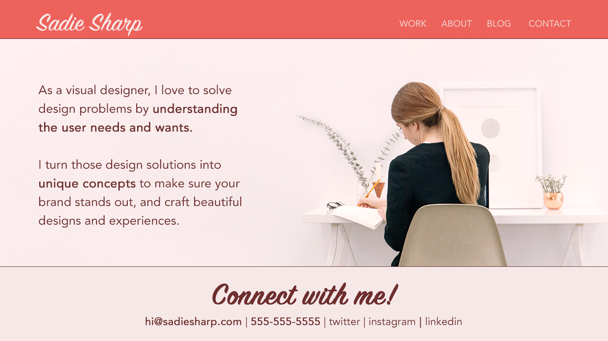
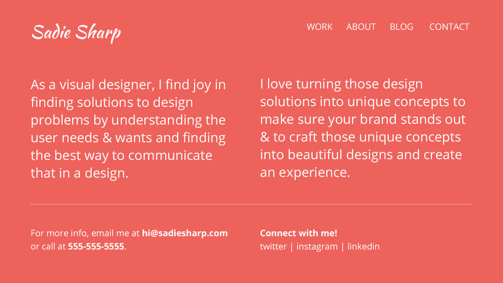
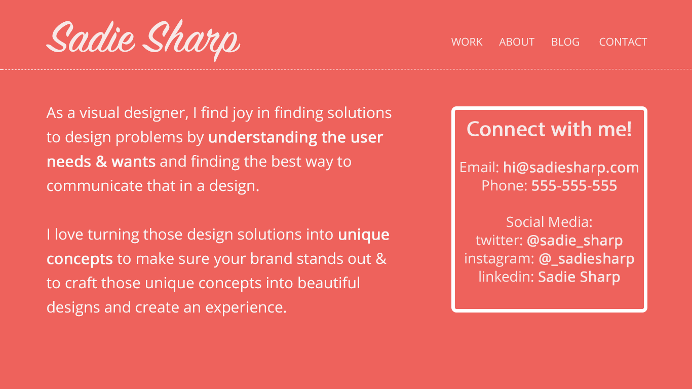
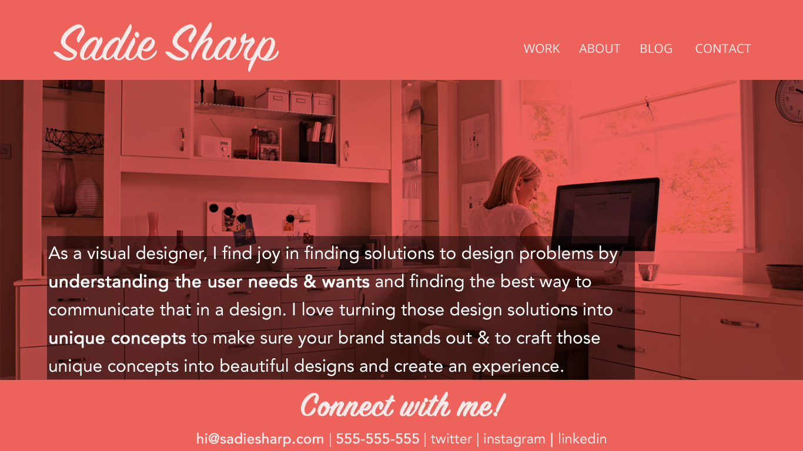
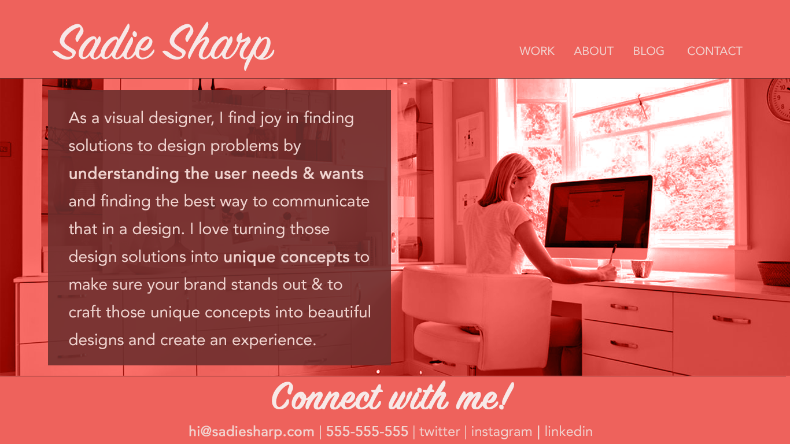

"Sadie Sharp" Homepage Redesign
Final Design Comp
This project was one of the first assignments for my Visual Design Fundamentals and Tools class. We were given the home page design below for an imaginary client named Sadie Sharp, and were asked to make adjustments to the text size and spacing:

At first, I respaced the body text to be a more unified thought, and highlighted the contact section with a border:

This helped to prioritize and separate the text, but it didn't quite feel like a "website" yet. I found a free stock image that could be of Sadie, edited it to fit the color scheme, and rearranged the text boxes again:

In the final edit before moving forward with the class, I rebalanced the elements, altered the colors, and brought in small details:

After completing the class, I revisited this design to see if I could make any improvements. Keeping the same color scheme, fonts, and basic elements, I cleaned up the design and picked a more simple photo to represent Sadie, resulting in the finished design comp on the left.